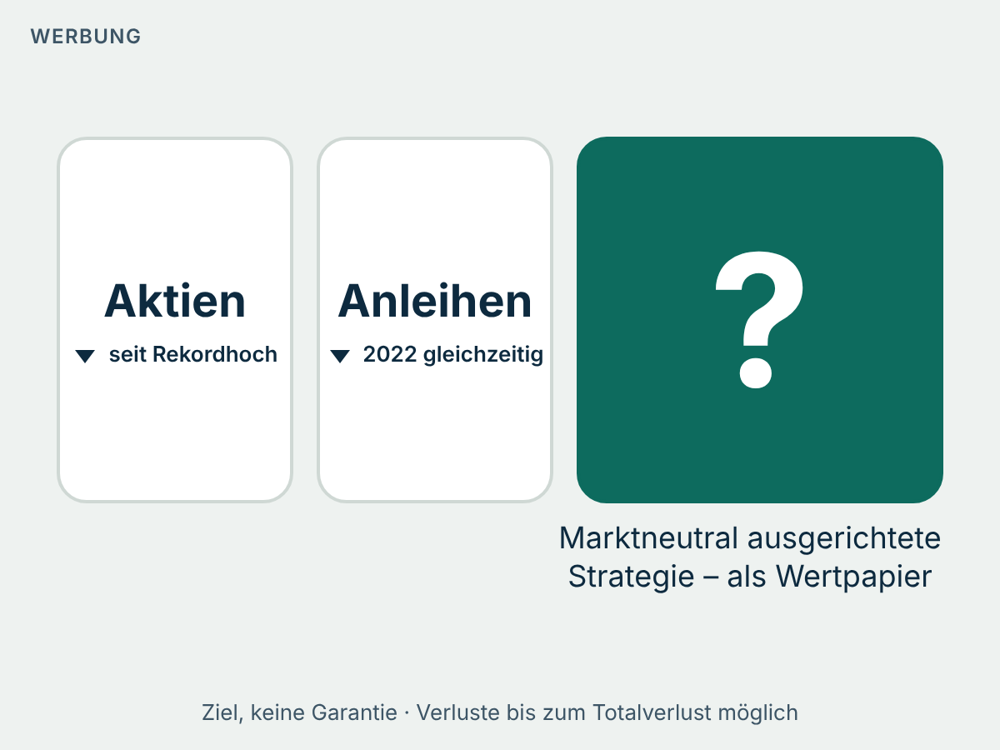

Aktien und Anleihen im Minus?
Ein Baustein, der nicht auf steigende Kurse setzt. Ziel, keine Garantie.
→ /lc002-eti/maerkte-im-minus/?utm_content=k1
K1 · Drei Bausteine
развитие C15 (тот же визуальный код карточек = узнаваемость и message match с лендингом)
- Заголовок-вопрос к читателю — Вопросы, обращённые к читателю, кликают заметно чаще утверждений (Lai & Farbrot, 2013: +137 % / +257 %); в лучшем креативе A тоже вопрос.
- Две белые карточки + зелёная «?» — Повторяет структуру C15 и блок «Außer Aktien und Anleihen» на лендинге — человек видит то же, что кликнул (message match).
- ▼ и подписи вместо красного — Красный цвет снижает готовность к риску на 15–30 % (Bazley et al., 2021); ~8 % мужчин не различают красный/зелёный — падение показано формой и текстом.
- «seit Rekordhoch» / «2022 gleichzeitig» — Подписи проверяемы: DAX −3,9 % от рекорда 12.11; 2022 — первый с 1969 года год падения и акций, и облигаций (Callan).
- «Marktneutral ausgerichtete Strategie» — Формулировка цели, как у DJE, Janus Henderson, BNY: «soll / strebt an», а не результат.
- Нижняя строка про риск — В малом формате выгода и риск должны быть сбалансированы (MiFID Art. 44, ESMA); пометка «Werbung» обязательна (§ 22 MStV).